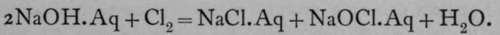

Energy. Part 2
Description
This section is from the book "Modern Chemistry", by William Ramsay. Also available from Amazon: Modern Chemistry: Theoretical and Modern Chemistry (Volume 2).
Energy. Part 2
The opposite is the case with endothermic compounds ; the amount of heat absorbed by the union of their constituents is less the higher the temperature ; and when the temperature surpasses a certain point peculiar to each substance the endothermic compound changes its character and becomes exothermic. But it is not often possible to produce endothermic compounds by bringing the elements together at a high temperature, because in cooling down they separate again into their ^constituents. It appears necessary to communicate energy to them in some form other than heat. The formation of ozone, O3, is accomplished by passing the silent electrical discharge through oxygen. It is probable that the disruption of the oxygen molecule O2 into atoms is produced by the rise of temperature due to the electric sparks, but the combination of some of these atoms into groups of three (as well as for the most part into groups of two) is probably to be ascribed to the energy which they receive in the shape of electric charges. Another instance is that of the burning of the nitrogen of the air when a high tension current is passed through it. Nitrogen and oxygen do not unite even at the highest temperature which can be produced by the combustion of carbon, but when a high tension current is passed through a mixture of the two gases a true flame is produced, and combination to nitric peroxide, NO2, takes place. This flame can be blown out, and it can be rekindled by the help of a lighted match. It would thus appear that endothermic compounds can be directly formed when energy is communicated to them electrically.
When a chemical reaction between elements, resulting in the formation of a compound, takes place, it is not always that compound which is formed involving the greatest expenditure of energy, or in other words, the greatest evolution of heat. It is quite possible for a compound to be produced which, when appropriately treated, will change into a still more stable configuration. Let us take an example : When chlorine is passed through a solution of caustic soda, the most stable configuration of the elements is the production of sodium chloride, water, and oxygen. But the reaction proceeds by no means so far ; it ceases when the products are sodium chloride, sodium hypochlorite, and water :
 .
This solution, when warmed, undergoes a further change, and again loses energy, yielding sodium chlorate and chloride : 3NaOCl. Aq = NaClO3. Aq + iNaCl. Aq. But the change does not cease here. For on evaporating to dryness, and heating it still further, the chloride is again decomposed into oxygen and chloride : 2NaClO3 = 2NaCl -f $Or.
This final change is also exothermic. A mechanical analogy for such a series of transformations may be found.
Imagine a switchback railway on an incline, those portions of the rail which usually slope upwards being nearly level. Further imagine a carriage started over the first incline so as to roll on to the nearly level rail ; it will stop here ; and it will require a further push to send it over the second incline, when it will rest on the second level platform and require another push to cause it to roll over the third incline on to the third level platform. These level platforms may be taken as analogous to the intermediate compounds before chloride of potassium is formed. As the carriage loses energy during each fall but stops several times before all energy is lost, so it is possible to have a number of stages in loss of energy before the final stable stage is reached. Such cases are by no means unfrequent ; it is not always possible to trace their sequence as readily as in the case given, for it is not always possible to stop at the intermediate stage ; but intermediate compounds may be made otherwise, and they obviously belong to a series similar to that given.
It has been frequently mentioned that application of heat is necessary in order to start a reaction ; this is analogous to the push which must be given to the carriage in order that it roll over the incline ; if left alone, the compound is stable, but the imparting to it of an exceedingly small amount of energy suffices to cause it to lose a considerable amount of energy in passing to the next stage. From the molecular point of view it may be imagined that the application of heat causes a motion of the atoms within some of the molecules of the compound ; these begin to adjust themselves in some new form of combination, and the heat evolved during this readjustment is imparted to those molecules which have not already suffered change, and causes them also to assume a new form of combination attended with loss of energy.
Besides losing energy by loss of heat during the formation of a compound, energy may be evolved in other forms. It is well known that in order to change a liquid into gas, heat must be imparted to it, or, if the change take place by evaporating the liquid in a partial vacuum, the liquid itself will grow cold.
Conversely, when a gas is condensed into a liquid it parts with the energy which it previously contained. When a solid is changed into a liquid it absorbs energy ; when a liquid is frozen into a solid it loses energy. Now, in many chemical reactions the products have not the same physical state as the substances from which they are formed ; and in this case energy is lost or gained according to circumstances. For example, when carbon dioxide is set free by the action of an acid upon marble, a gas is produced, and the production of this gas is attended with absorption of energy ; in order to measure the amount of this energy it would suffice to condense that gas to liquid and to freeze the liquid to solid and to measure the amount of energy evolved during these transformations. It would then be possible to ascertain the total quantity of energy lost during the chemical change, independently of the change of state which the products undergo on being formed. But this is not all ; for when a gas is produced it occupies space and displaces a certain amount of air. Imagine the gas to be evolved at the bottom of a vertical tube, which, of course, was originally in communication with the atmosphere and full of air ; the gas would expel this air from the tube, or, in other words, raise it. Now air possesses weight, and presses on the surface of the earth with a weight of 1.033 kilograms on each square centimeter, and the work done by the gas in issuing into the atmosphere would depend, in the instance given, on the sectional area of the tube, and the height up the tube to which the carbonic acid reached. Here energy is expended, or, as is usually said, work is done, in raising the weight; and in estimating the total energy of the reaction mentioned, this work, accomplished against gravity, must be subtracted from the total.
Continue to: